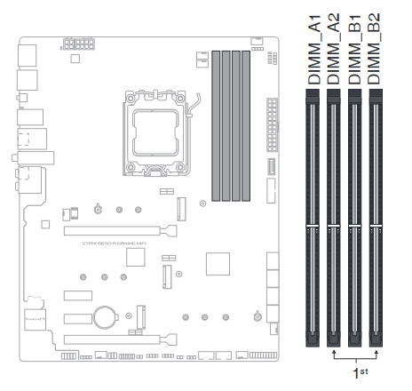

Como Montar Um Pc
1º passo: Planejamento
Defina o propósito do seu PC (jogos, trabalho, edição de vídeo, etc.)
Estabeleça um orçamento
Liste os componentes necessários.
Escolha dos Componentes
Processador INTEL Pentium G5905
A localização exata do soquete da CPU pode variar dependendo do modelo da placa-mãe, mas é comumente encontrado na área central da placa, próximo ao dissipador de calor e ao sistema de ventilação para ajudar na refrigeração do processador. O dissipador de calor é muitas vezes acompanhado por um ventilador para dissipar o calor gerado pelo CPU durante o funcionamento.
Placa-mãe
A placa-mãe serve como a principal plataforma de comunicação entre os diferentes componentes do computador. Ela fornece os meios para esses componentes se comunicarem e trabalharem juntos para executar as tarefas do sistema. Portanto, a placa-mãe é essencial para o funcionamento do computador.
Memória RAM
As memórias RAM (Random Access Memory) ficam instaladas na placa-mãe do computador. Os slots de memória RAM geralmente estão localizados na área central ou lateral da placa-mãe, próxima ao soquete do processador. A quantidade de slots pode variar de acordo com o modelo da placa-mãe.

Placa Gráfica Gigabyte GeForce RTX 4060 Ti Gaming 16GB GDDR6 OC DLSS3(se não estiver integrada à placa-mãe ou ao processador).

Em computadores de mesa (desktop), a placa de vídeo geralmente é instalada em um slot de expansão na parte superior da placa-mãe. Este slot é conhecido como PCI Express (PCIe) e pode ter diferentes tamanhos, como x16, x8 ou x4. A placa de vídeo é conectada a esse slot e, muitas vezes, também requer energia adicional de uma fonte de alimentação.
Em computadores de mesa (desktop), a placa de vídeo geralmente é instalada em um slot de expansão na parte superior da placa-mãe. Este slot é conhecido como PCI Express (PCIe) e pode ter diferentes tamanhos, como x16, x8 ou x4. A placa de vídeo é conectada a esse slot e, muitas vezes, também requer energia adicional de uma fonte de alimentação.
Armazenamento (SSD/HDD)
O armazenamento SSD (Solid State Drive) é um dispositivo de armazenamento de dados que, assim como a placa de vídeo e a memória RAM, é conectado à placa-mãe do computador. No entanto, sua localização específica pode variar dependendo do tipo de computador e da configuração do sistema.
Em desktops (computadores de mesa), os SSDs geralmente são montados em compartimentos especiais na parte interna do gabinete. Pode haver suportes específicos para instalar os SSDs de forma segura. Muitas vezes, os gabinetes de desktop modernos têm compartimentos específicos para SSDs ou permitem a fixação desses dispositivos em locais dedicados.
Fonte de alimentação (PSU)
A fonte de alimentação (PSU - Power Supply Unit) em um computador desktop geralmente está localizada na parte traseira do gabinete. Ela é uma unidade retangular que se conecta à parte traseira do gabinete do computador. A fonte de alimentação é responsável por fornecer energia elétrica a todos os componentes do computador, convertendo a energia da tomada em voltagens adequadas para o funcionamento dos componentes internos.
A extremidade da fonte de alimentação que se conecta à placa-mãe tem um conjunto de cabos que fornecem energia para a placa-mãe, processador, memória e outros componentes. Além disso, a fonte de alimentação geralmente possui cabos adicionais para alimentar dispositivos como unidades de armazenamento, drives ópticos, placas de vídeo e outros periféricos.
>Caixa PC MARS GAMING MCVP
A Caixa PC MARS GAMING MCVP do computador é a estrutura externa que abriga todos os componentes internos do computador, como a placa-mãe, o processador, a memória RAM, a placa de vídeo, o armazenamento e a fonte de alimentação. Ele protege esses componentes contra danos físicos e ajuda a manter um ambiente de trabalho limpo.
Sistema de refrigeração
O sistema de refrigeração em um computador pode consistir em vários componentes que ajudam a dissipar o calor gerado pelos componentes internos, como o processador (CPU) e, em alguns casos, a placa de vídeo (GPU). Os principais componentes do sistema de refrigeração incluem:
2º passo: Teste Inicial
Antes de fechar o gabinete, faça um teste inicial para garantir que todos os componentes estão funcionando.
Conecte o monitor, o teclado e o mouse ao computador. Certifique-se de que todos os cabos estejam firmemente encaixados.
Certifique-se de que a fonte de alimentação esteja conectada à placa-mãe e a todos os componentes necessários, como a CPU, a placa de vídeo e a memória RAM.
Pressione o botão de alimentação no gabinete para ligar o computador. Observe se os ventiladores começam a girar e se há sinais de vida, como luzes piscando.
Algumas placas-mãe possuem LEDs de diagnóstico que podem indicar se há algum problema com a inicialização. Consulte o manual da placa-mãe para entender o significado desses LEDs.
Se sua placa-mãe tiver um alto-falante embutido, ela pode emitir beeps durante o processo de teste automático de inicialização (POST). Beeps específicos podem indicar problemas. Consulte o manual para interpretar os códigos de beep.
Verifique se há uma imagem no monitor. Certifique-se de que o cabo de vídeo esteja conectado corretamente.
Verifique se há uma imagem no monitor. Certifique-se de que o cabo de vídeo esteja conectado corretamente.
3º passo: Instalação do Sistema Operacional:
Insira o disco de instalação do sistema operacional ou crie uma unidade flash bootável.
Siga as instruções na tela para instalar o sistema operacional.
4º passo: Drivers e Atualizações
Instale os drivers necessários para cada componente.
Faça as atualizações do sistema operacional.
5º passo: Software Adicional:
Instale os programas e aplicativos que você precisa para suas tarefas específicas.
Configurações Finais:
Ajuste as configurações de energia, resolução de tela
Configure seu antivírus e outras configurações de segurança.
Backup:
Faça backup regularmente para garantir a segurança dos seus dados.